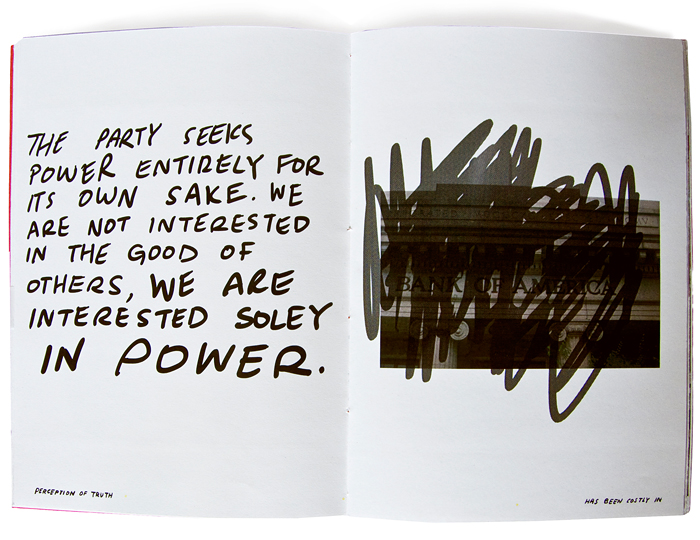
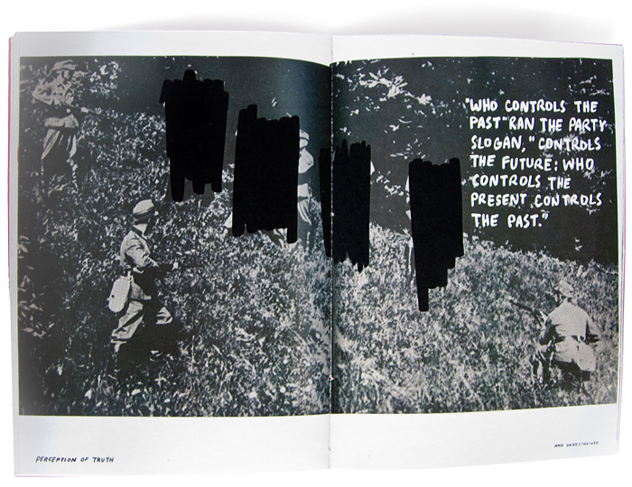
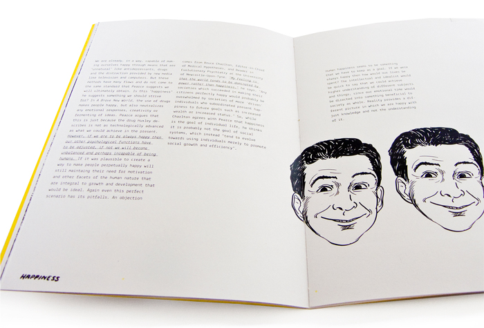
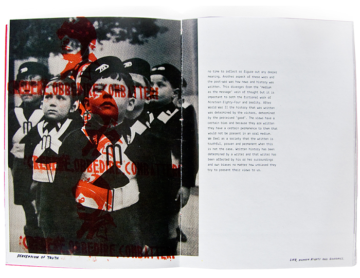
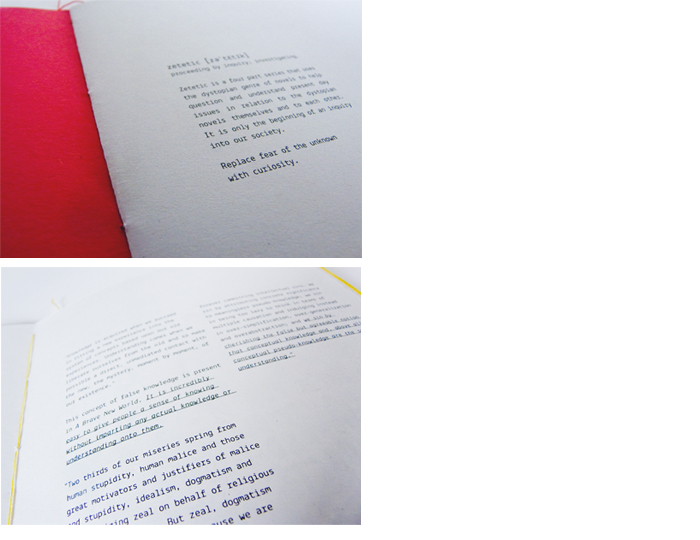
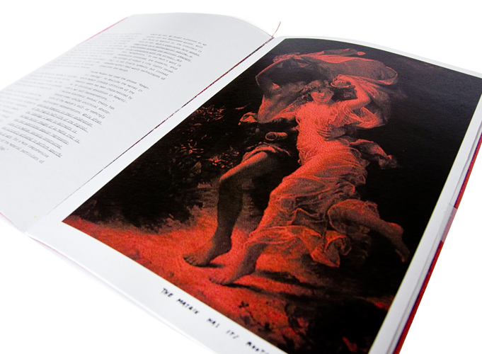
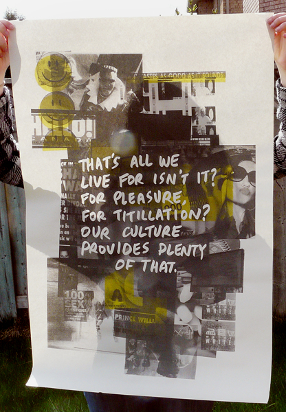
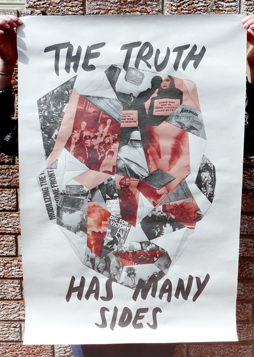
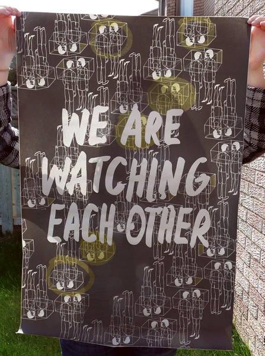
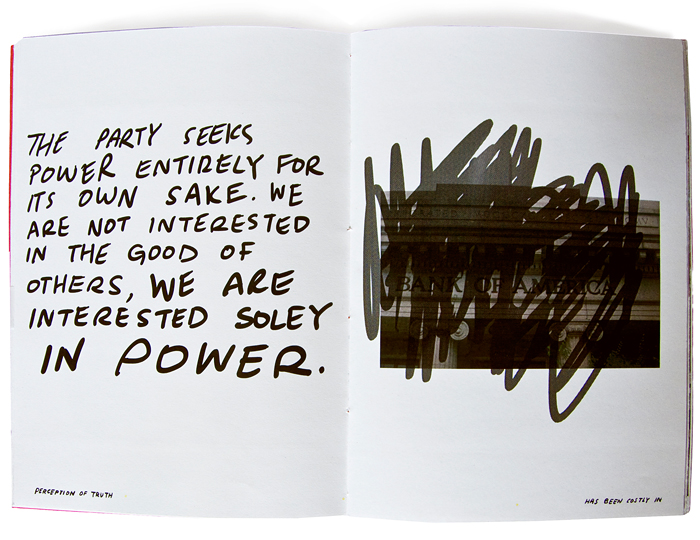
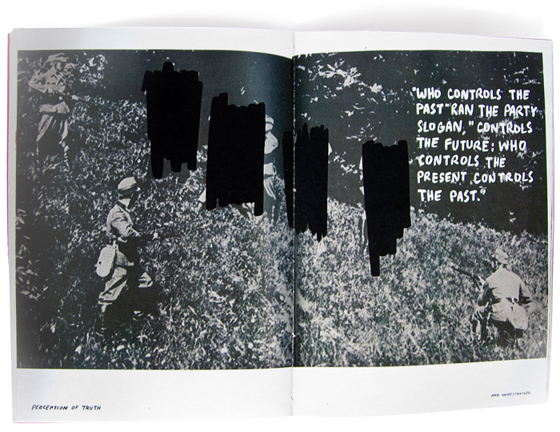
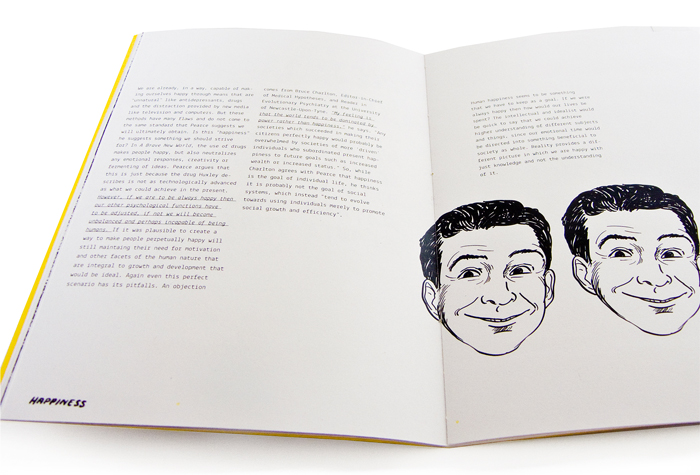
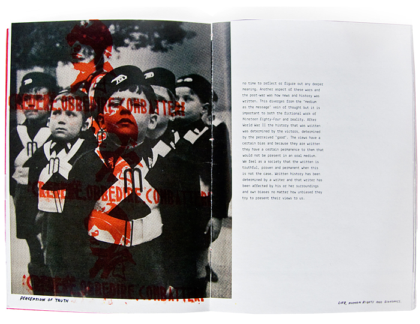
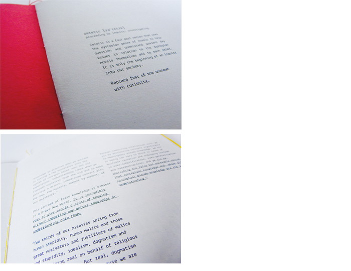
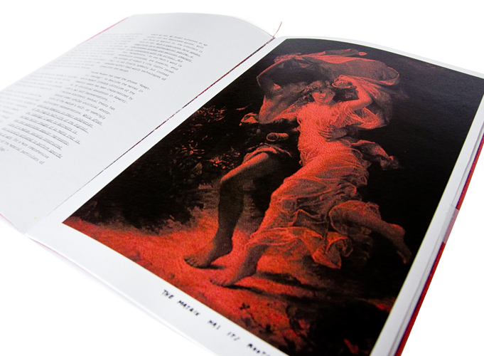
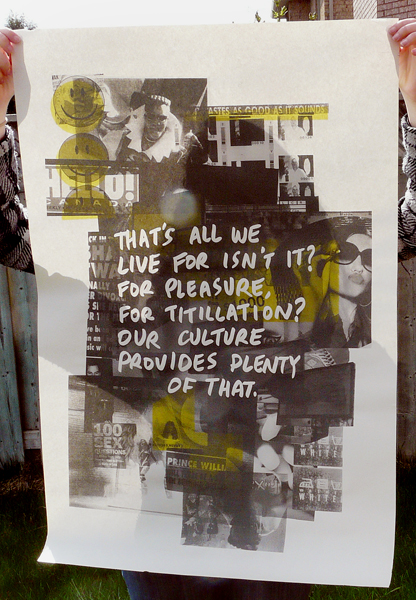
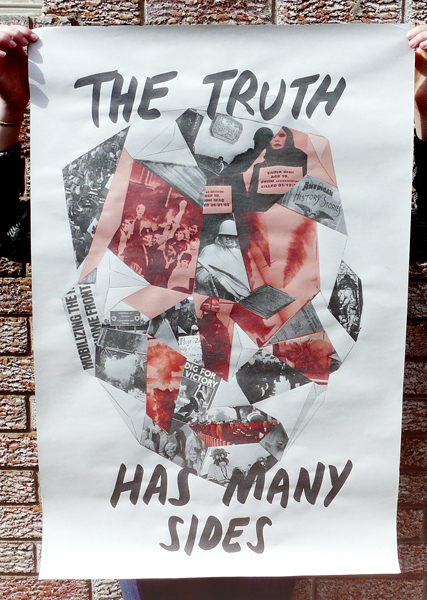
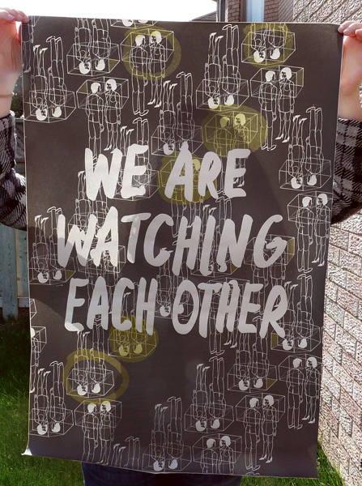


The word Zetetic means to arrive at or proceed by inquiry. The project Zetetic uses the genre of dystopian novels to help question present-day issues (privacy and surveillance, truth in the media, happiness in society and the relationship of technology to people) and compare them back to literature and to each other.
This project consists of four posters and 4 accompanying zines.
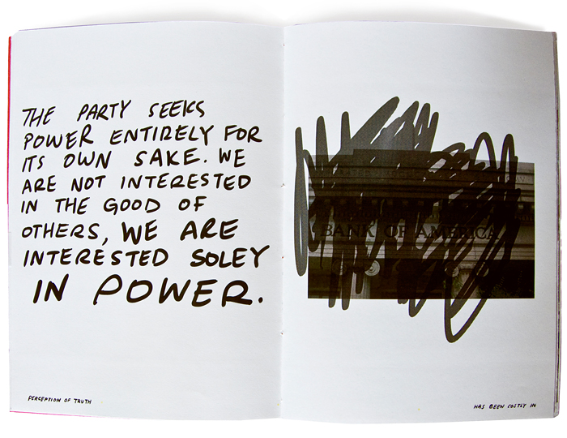
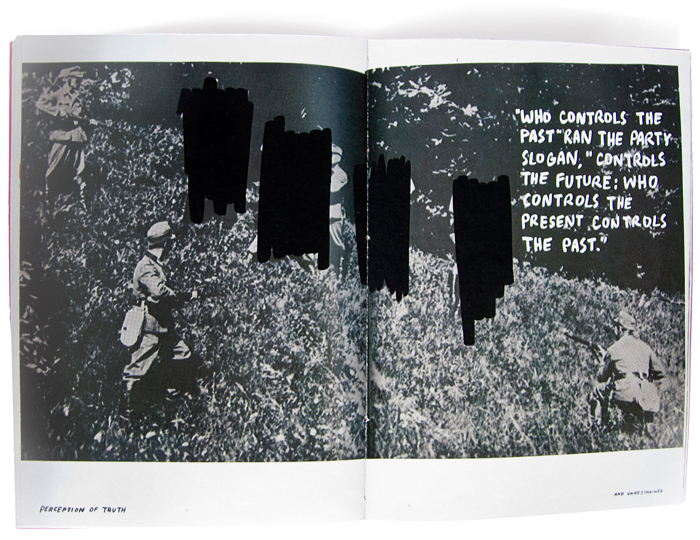
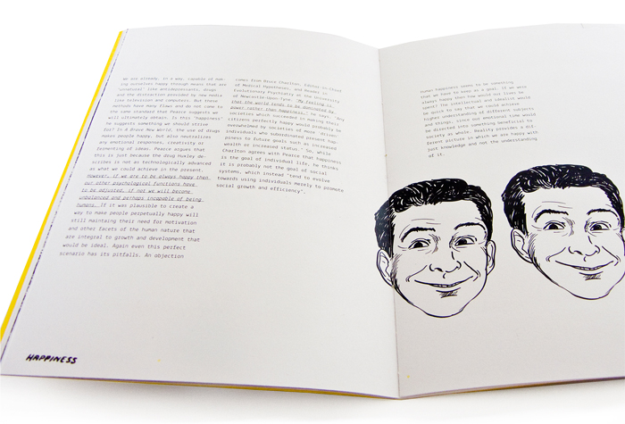
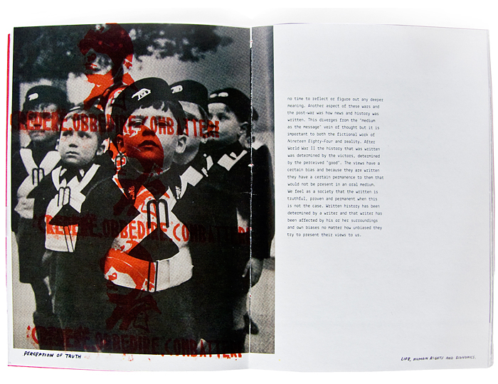
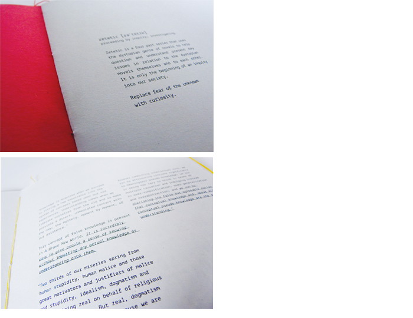
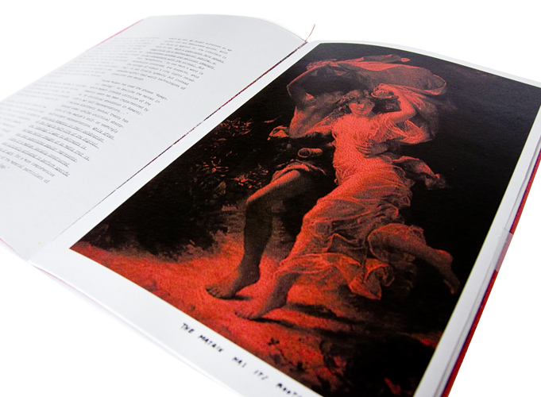
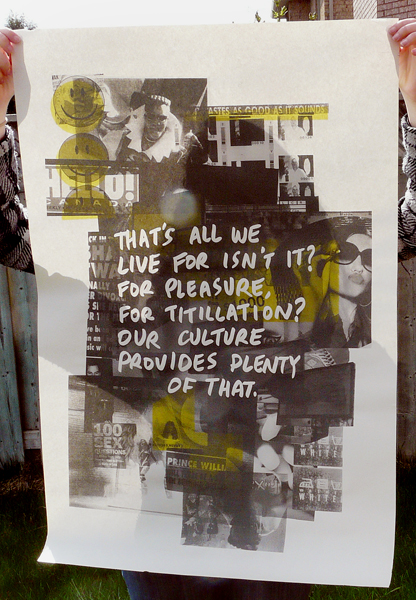
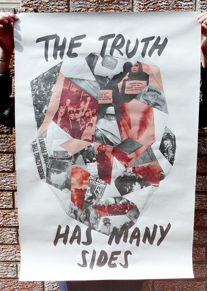
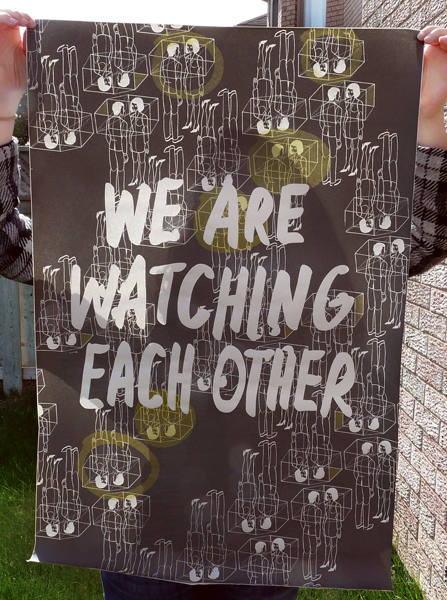